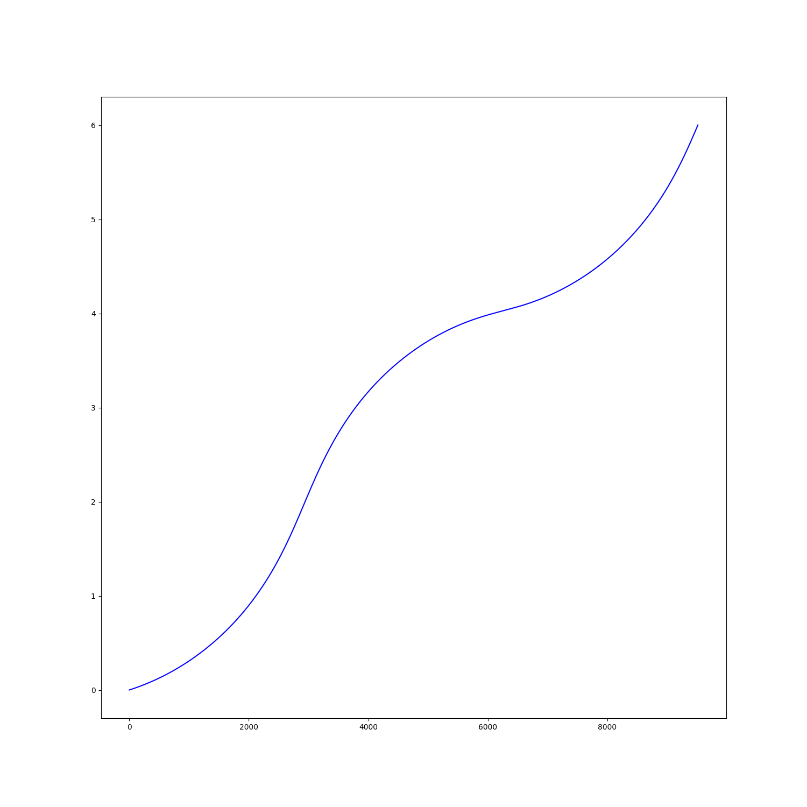
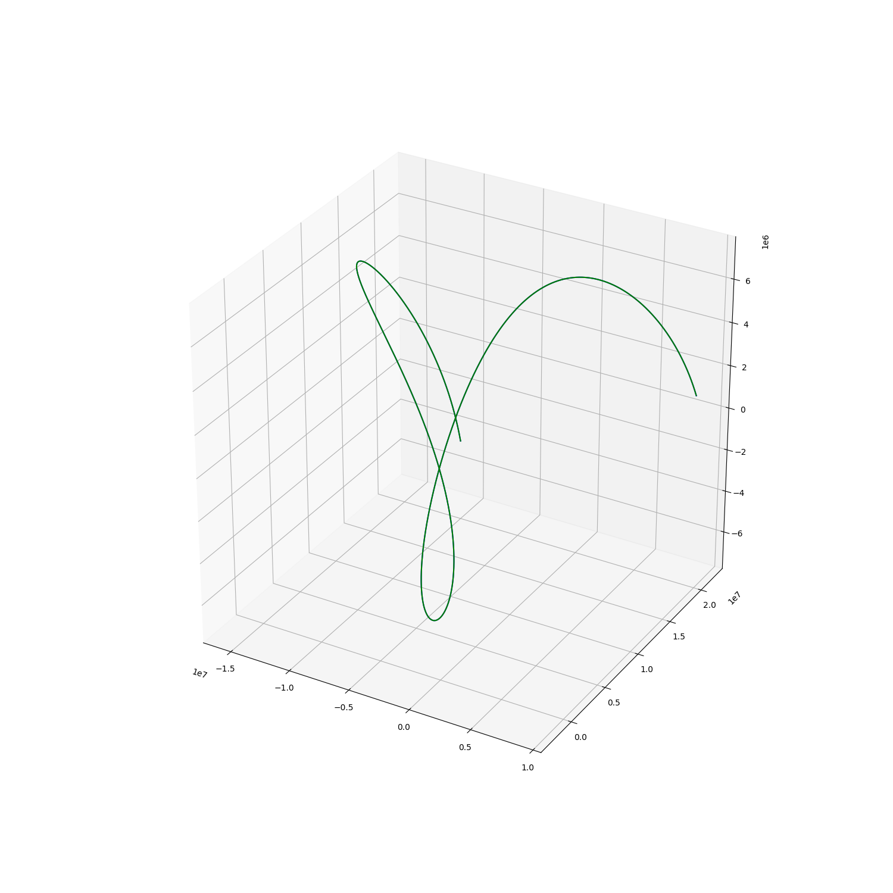

Note
Click here to download the full example code
Misc functions for passes¶


Out:
a : 1.3000e+07 x : -6.8543e+05
e : 8.0000e-01 y : 1.3145e+06
i : 7.5000e+01 z : 3.4471e+06
omega: 0.0000e+00 vx: -4.2751e+03
Omega: 7.9000e+01 vy: -8.1104e+03
anom : 7.2000e+01 vz: 9.8862e+03
Temporal points: 9516
import numpy as np
import matplotlib.pyplot as plt
from mpl_toolkits.mplot3d import Axes3D
import pyorb
import sorts
from sorts.propagator import SGP4
Prop_cls = SGP4
Prop_opts = dict(
settings = dict(
out_frame='ITRF',
),
)
prop = Prop_cls(**Prop_opts)
orb = pyorb.Orbit(M0 = pyorb.M_earth, direct_update=True, auto_update=True, degrees=True, a=13000e3, e=0.8, i=75, omega=0, Omega=79, anom=72, epoch=53005.0)
print(orb)
t = sorts.equidistant_sampling(
orbit = orb,
start_t = 0,
end_t = 3600*6,
max_dpos=1e4,
)
print(f'Temporal points: {len(t)}')
fig = plt.figure(figsize=(15,15))
ax = fig.add_subplot(111)
ax.plot(range(len(t)), t/3600.0,"-b")
#For some reason there is something messed up with this SGP4 propagation
# TODO: figure out what
states0 = prop.propagate(np.linspace(0,3600*6,num=len(t)), orb.cartesian[:,0], orb.epoch, A=1.0, C_R = 1.0, C_D = 1.0)
states = prop.propagate(t, orb.cartesian[:,0], orb.epoch, A=1.0, C_R = 1.0, C_D = 1.0)
fig = plt.figure(figsize=(15,15))
ax = fig.add_subplot(111, projection='3d')
ax.plot(states[0,:], states[1,:], states[2,:],"-b")
ax.plot(states0[0,:], states0[1,:], states0[2,:],"-g")
plt.show()
Total running time of the script: ( 0 minutes 3.748 seconds)